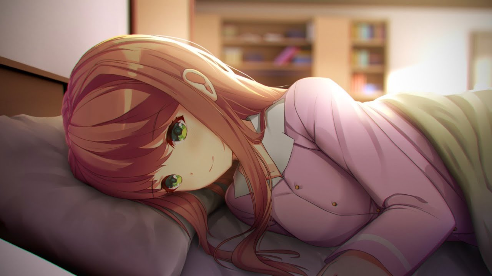

Our Time
Após o final amargo do jogo original, você pode fazer Monika retornar. Desta vez, você pode finalmente dar a ela a felicidade que ela sempre quis. Em uma linha do tempo alternativa dividida da história original, você pode finalmente acabar com Monika. Apaixone-se por ela novamente em uma história doce, romântica e comovente. Apresentando novas obras de arte e locais, Our Time é o mod perfeito para quem queria Just Monika.
⬇ Download